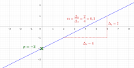

Les droites
Toute fonction affine est représentée par une droite.
Si la fonction est constante, la droite est horizontale. Si la fonction est linéaire, la droite passe par l'origine du repère.
Method : Déterminer l'expression algébrique d'une fonction affine :
\(p\) est l'image de \(0\) par la fonction : c'est l'ordonnée du point où la droite coupe l'axe des ordonnées.
\(m=\dfrac{y_A-y_B}{x_A-x_B}\) pour \(A\) et \(B\) n'importe quels points appartenant à la droite.
Note :
En notant \(\Delta_y\) le déplacement en ordonnées et \(\Delta_x\) le déplacement en absisses, \(m=\dfrac{\Delta_y}{\Delta_x}\)
Il est souvent plus rapide d'utiliser cette formule lorsqu'on a accès au graphique.
Example :
L'expression algébrique de cette fonction est \(f : x\mapsto 0,5x - 2\)